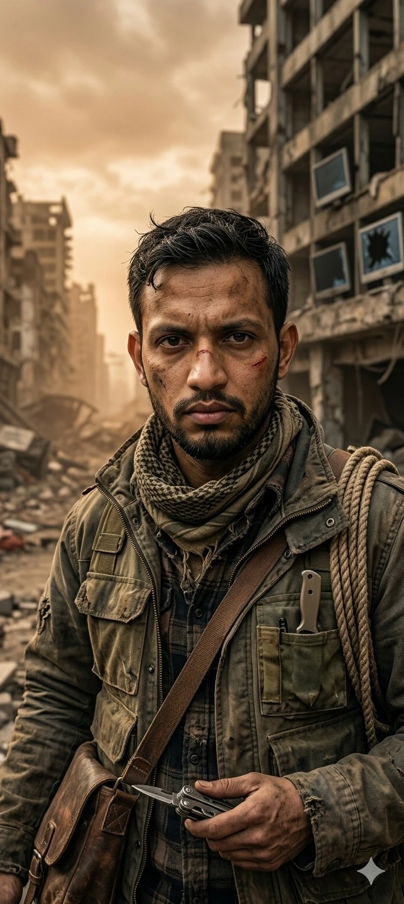
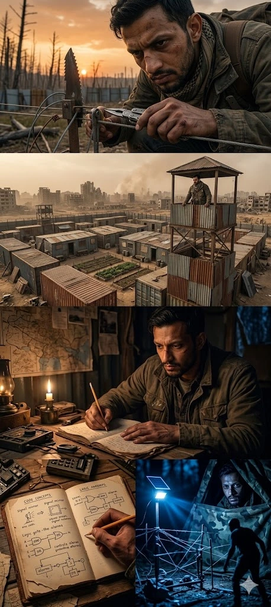
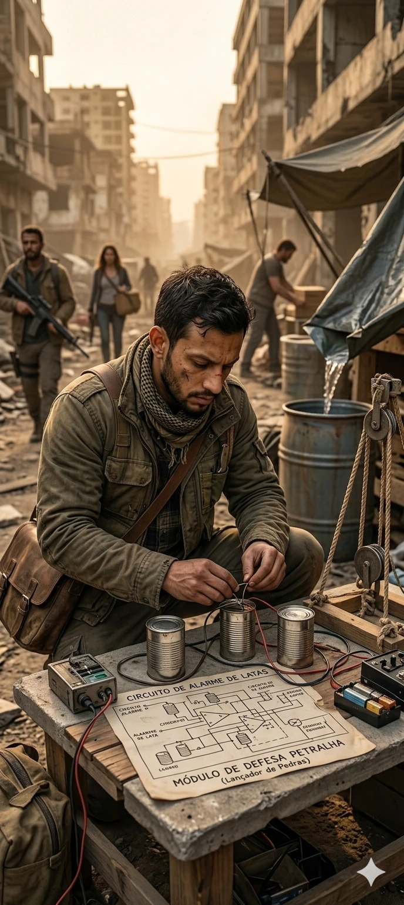
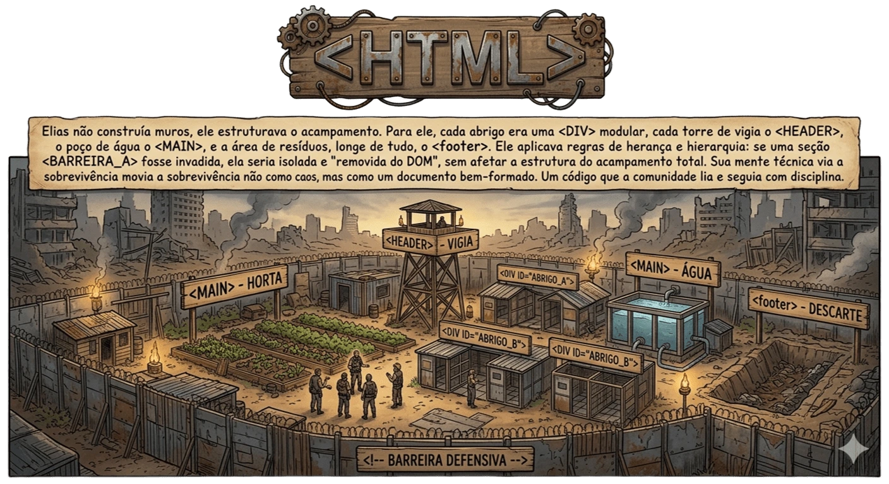

O Último Desenvolvedor de "Interfaces"
Vinte anos atrás, Elias passava doze horas por dia
ajustando o padding de botões e depurando loops
infinitos em JavaScript.
Hoje, o único "bug" com o qual ele se preocupa é o
som de galhos quebrados na floresta morta que
cerca seu acampamento.

A Estrutura

Para os outros sobreviventes, o acampamento era apenas uma pilha de sucata.
Para Elias, era um documento estruturado. Ele organizou a comunidade
seguindo uma hierarquia semântica rígida:
header: A torre de vigia, o ponto mais alto e importante para a segurança.
main: A horta comunitária e o poço de água.
footer: A área de descarte e latrinas, devidamente afastada do conteúdo principal.
Ele não usava tijolos; usava lógica. Cada abrigo era construído para ser modular.
Se um zumbi invadisse uma seção, aquela "div" era isolada e descartada sem
comprometer o resto da estrutura.
O Código
Enquanto os outros sobreviventes se preocupavam com
armas e suprimentos,
Elias se concentrava em otimizar o código de sobrevivência.
Ele criou rotinas para coletar água da chuva,
sistemas de alarme usando latas e cordas,
e até um mecanismo de defesa improvisado que lançava
pedras nos zumbis.
Seu código era eficiente, reutilizável e, mais importante,
mantinha a comunidade viva.

Habilidades

Habilidade de estruturar e organizar o acampamento de forma lógica e eficiente,
garantindo a segurança e a funcionalidade para os sobreviventes.
.webp)